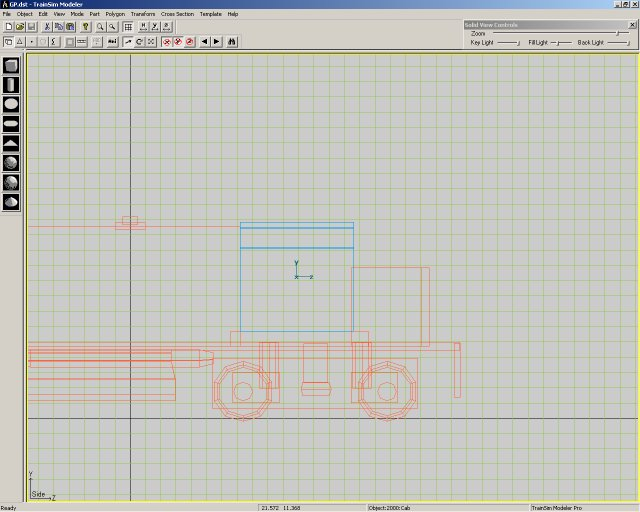
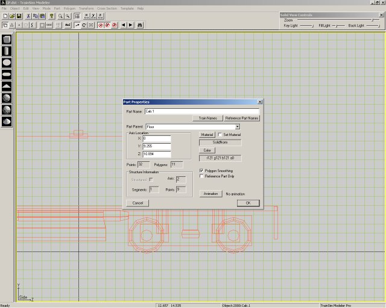
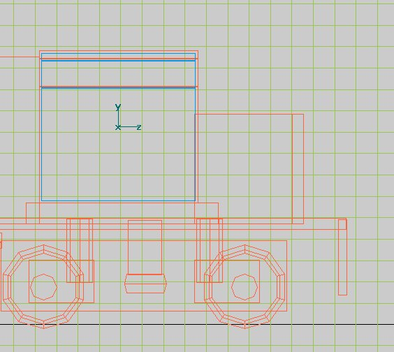
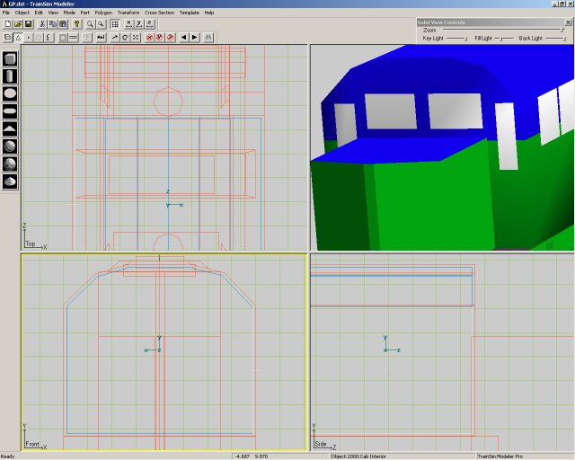
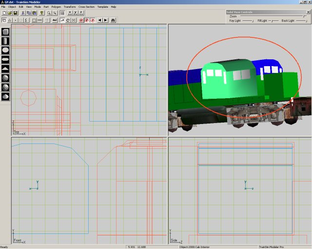
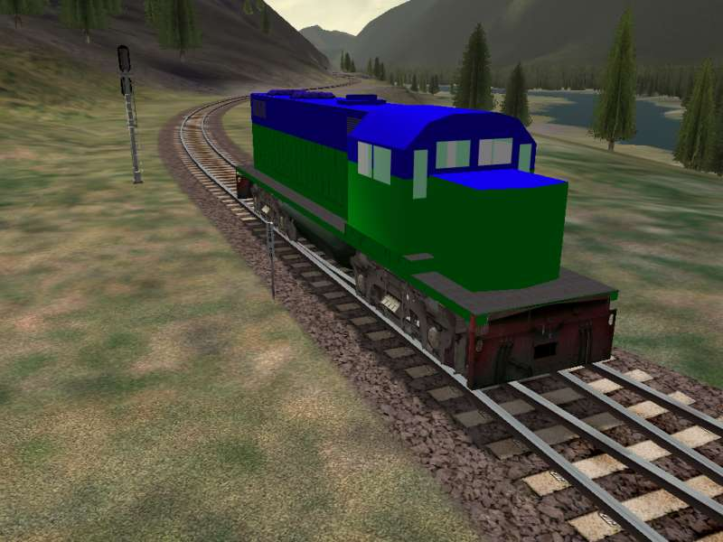

Here we have the finished locomotive, sans transparent windows. As mentioned previously, the windows are nothing more than a white tint to conceal in interior.
We now have to modify the cab to allow us to see through it. Start by pulling up the project, and selecting the cab.

We need to make an exact copy of the cab. Why? When we assign a material to the model, we can really only assign one material at once. If we were to assign a transparency to the cab without creating a cab interior, when we looked through the cab, you would notice that the opposite sides would be transparent too.
Once we have the cab selected, hit CTRL-C on the keyboard to copy the cab. Then hit CTRL-V to paste a new copy of the cab. Then hit F2 to get to the cab's properties. You will see the cab has been assigned the name CAB.1 (or whatever your cab was originally named). It is suggested that you rename the cab to something more meaningful, such as CAB INTERIOR. Once you have done that, click OK to return to the edit screen.

The next thing we need to do is to make the cab interior slightly smaller than the exterior cab. We do this so that the textures do not interfere with one another. Hit S on the keyboard to start the scale mode. Next, drag the mouse so that the cab will begin to shrink. Shrink it so that it is only a few pixels smaller than the exterior cab. In this image, we have shrunk the cab slightly:

Now that the cab has been reduced, we now need to flip all of the polygon faces so that they are pointing inward. This needs to be done because the material is not double-sided, and you wouldn't see the opposite side of the cab if you left the faces pointing outward. With the cab selected, click on the FACES icon on the toolbar. It is the icon that is shaped like a triangle.
If you are in a single view mode, it might be a good idea to go back to the quad-window view. It makes it easier to keep track of where you are in the part, and which way the face is flipped.

Looking at the front view, you will see that this face is flipped outwards. You can tell which way the face is facing based on the white line leading out from the face itself:
Flip each face by hitting F on the keyboard, and then either N for the next face or the arrow keys. Do this until all of the faces have been flipped inward. When complete, go back into part mode (the 3d cube on the toolbar).
Once all of the faces have been flipped, we have to re-apply the textures. Remember when I recommended to copy the texture and just change the colours? There is another reason why this should be done. When you go to map the faces (by hitting F4), all you need to do is change the name of the file to obtain the map. Copying makes it easier, because the co-ordinates are already mapped.
I pulled out the cab interior to show something important. Take a look at this picture:

Notice anything strange in the picture? If you look closely, you'll see that the front windows are actually in the back of the cab. This happened because when you flipped the faces, it also flips the orientation! This is important to note because if you where to run the locomotive in MSTS with the orientation in this position, your outside and inside windows would not line up properly!
There is an easy way to fix this. While you are in Part mode (the 3d square on the toolbar), select TRANSFORM -> FLIP -> Flip Z. This will reverse the textures, and should orient everything properly.
We are in the home stretch for the transparent windows! The final step is to assign a transparency level to the interior and exterior cab. Since we have the interior cab selected, let's fix this one first. With the cab selected, hit F2. This will bring up the part properties. On this dialog box is a button marked MATERIAL. This is how you control your translucency on the model. Click this button, and a whole host of options will appear.
The materials you should use for the interior all have the minus sign (-) at the end of them. If you wish to have the cab lit up at night (it looks pretty neat), select ALPHAHLFBRT-. You could select ALPHABRT-, but that would make the cab too lit up. Click OK to select this material, then click OK to close the parts dialog box. You have just assigned tranlucency to the interior!
Finally, let's change the exterior cab to match. Select the exterior cab, hit F2 and select the Material button again. Because this is the external texture, we need to assign a positive alpha to it (any property with a plus sign (+) beside it). For this example, we will select ALPHANORM+. There isn't much point to selecting anything with a light to it, since it would cause your cab to glow (unless its a radioactive train, then be my guest!). Click OK to close the material window, and OK again to close the Part dialog box.
WE'RE DONE! That's all there is to creating windows! Build this locomotive, then run it in MSTS - you'll be happily rewarded with transparent windows on your locomotive!
